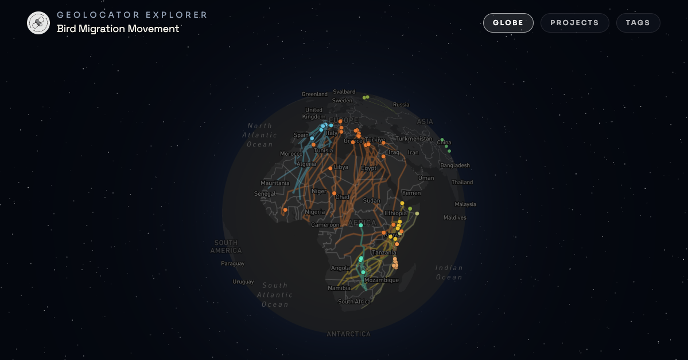
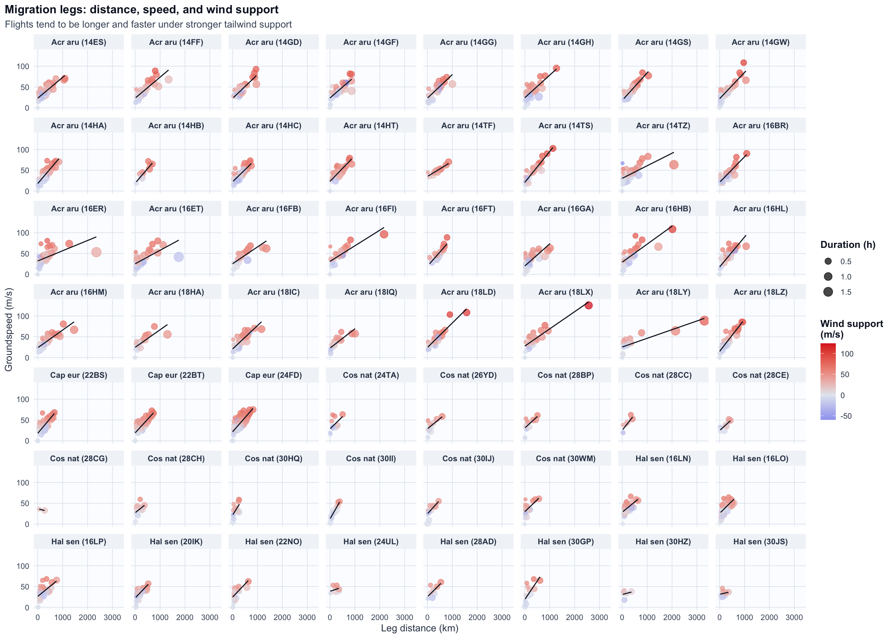
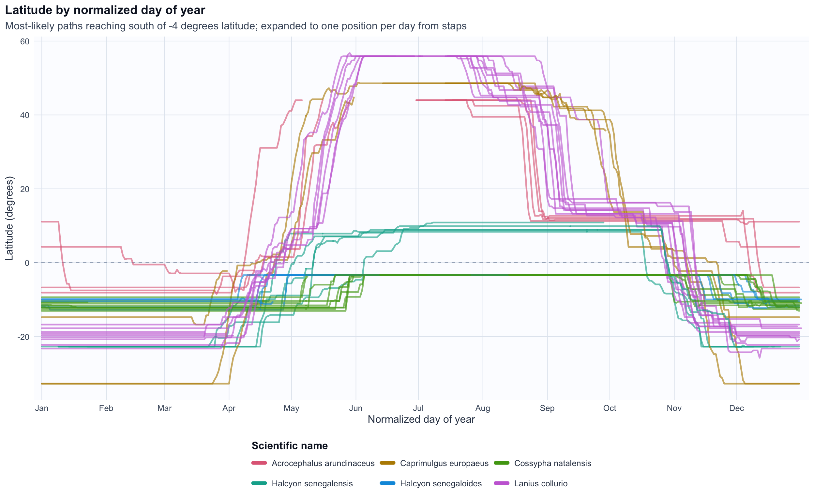

Use the interactive GeoLocatorExplorer to find datasets you’re interested in.

GeoLocatorExplorer interface to browse published geolocator data packages.
15.2 Read one GeoLocator Data Package
Records can be loaded using the Zenodo record id, DOI, DOI URL, or Zenodo record URL. This will automatically download the data, upgrade if necessary and load the data in your R console.
pkg <-read_zenodo("https://zenodo.org/records/13829929")## ℹ Retrieve Zenodo record 13829929## ✔ Retrieve Zenodo record 13829929 [545ms]## ## ℹ Download files from Zenodo## ✔ Download files from Zenodo [1.4s]## ## ℹ Read and upgrade GeoLocator-DP## ✔ Upgrading GeoLocator-DP from "v0.2" to "v1.0".## ℹ Read and upgrade GeoLocator-DP✔ Read and upgrade GeoLocator-DP [3.3s]## ## ℹ Add metadata## ✔ Add metadata [524ms]print(pkg)## ## ── A GeoLocator Data Package `pkg` (v1.0) ──────────────────────────────────────## ## ── Metadata## Note: All green texts are fields of `pkg` which can be accessed with `pkg$field`).## • title: "GeoLocator Data Package: South African Woodland Kingfisher"## • doi: <https://doi.org/10.5281/zenodo.15259676>## • contributors:## Raphaël Nussbaumer (contactperson) - <https://orcid.org/0000-0002-8185-1020>## Yann Rime (researcher) - <https://orcid.org/0009-0005-7264-6753>## Samuel Temidayo Osinubi (datacollector) -## <https://orcid.org/0000-0002-5143-6985>## ✔ access: Open access## • licenses: Creative Commons Attribution 4.0 International (cc-by-4.0) - {.url## https://creativecommons.org/licenses/by/4.0/legalcode}## • description: "This repository contains the raw data and the trajectory## information generated with the GeoPressureR workflow, following the## GeoLocator Data Package standard. The more complete code used to generate## this datapackage can be found on the Github Reposit..."## • version: "v1.2.1"## ✔ community: Geolocator DP community## • relatedIdentifiers:## issupplementto <https://doi.org/10.1098/rspb.2024.2633>## isdocumentedby <https://github.com/Rafnuss/WoodlandKingfisher>## • keywords: "Woodland Kingfisher", "multi-sensor geolocator", "intra-african## migration", "bird", and "migration"## • created: 2025-04-22 06:44:20.918179## • bibliographicCitation: "Nussbaumer R, Rime Y, Osinubi S (2025). \"GeoLocator## Data Package: South African Woodland Kingfisher.\"## doi:10.5281/zenodo.13829929 <https://doi.org/10.5281/zenodo.13829929>,## <https://zenodo.org/records/15259676>."## • temporal: "2017-01-10" to "2019-09-28"## • taxonomic: "Halcyon senegalensis"## • numberTags: tags: 25, measurements: 5, light: 5, pressure: 5, activity: 5,## temperature_external: 5, magnetic: 5, paths: 5, pressurepaths: 5## ## ── Resources: (8 resources) ## • `tags()` (n=25)## • `observations()` (n=64)## • `measurements()` (n=1,924,975)## • `staps()` (n=223)## • `twilights()` (n=3,262)## • `paths()` (n=22,523)## • `edges()` (n=22,018)## • `pressurepaths()` (n=224,828)plot(pkg, "map")
A GeoLocator DP object gives direct access to tabular resources through accessor functions: tags(), observations(), measurements(), staps(), paths(), edges(), twilights(), and pressurepaths().
For instance, the following code computes the uncertainty in total distance flown for each bird (expressed as a percentage across simulations):
You can combine two geolocator-dp objects with merge_gldp(). To make it easier, we can use purrr to read and combine a list of zenodo record_id into a single geolocator-dp object:
merge_gldp() returns a valid geolocator-dp, but it should be interpreted as a compiled object built from multiple source packages.
Tabular resources are merged by row.
Package-level metadata is merged with dedicated rules: some fields are combined (e.g., contributors), recomputed (e.g., taxonomic), while other are dropped (e.g., id).
tags() becomes the key provenance table: each tag has a datapackage_id that identifies its source datapackage.
A new table pkgs$datapackages is introduced and stores one row per source datapackage with compact provenance metadata and summary counts.
15.4 Showcase analysis: migration performance and wind support
This first example is a compact demonstration of table manipulation from a single resource (edges()), including data extract, filtering and mutation while asking a basic ecological question: “Are flights longer when wind support is better?”
Code
edge_metrics<-edges(pkgs)%>%filter(type=="most_likely")%>%left_join(tags(pkgs), by ="tag_id")%>%mutate( facet_label =paste0(str_replace_all(scientific_name, "\\b(\\w{1,3})\\w*", "\\1")," (",tag_id,")"), duration_h =stap2duration(.), groundspeed =sqrt(gs_u^2+gs_v^2), windspeed =sqrt(ws_u^2+ws_v^2), wind_support =(gs_u*ws_u+gs_v*ws_v)/pmax(windspeed, 1e-6))%>%filter(!is.na(wind_support))edge_metrics%>%ggplot(aes( x =distance, y =groundspeed, color =wind_support, size =duration_h))+geom_point(alpha =0.72)+geom_smooth(aes(x =distance, y =groundspeed), method ="lm", se =FALSE, color ="#111827", linewidth =0.55, inherit.aes =FALSE)+facet_wrap(~facet_label, ncol =8)+scale_color_gradient2( low ="#2563eb", mid ="#e2e8f0", high ="#dc2626", midpoint =0, name ="Wind support\n(m/s)")+scale_size(range =c(1.2, 4.8), name ="Duration (h)")+labs( title ="Migration legs: distance, speed, and wind support", subtitle ="Flights tend to be longer and faster under stronger tailwind support", x ="Leg distance (km)", y ="Groundspeed (m/s)")+theme_geolocator_modern(base_size =11)+theme( panel.spacing =grid::unit(0.55, "lines"), strip.text =element_text(size =9), legend.position ="right")
`geom_smooth()` using formula = 'y ~ x'

Across individuals, warmer colors (positive wind support) concentrate on larger/faster legs, showing that birds generally fly longer when wind support is better.
15.5 Showcase analysis: latitude seasonality from staps
This second example demonstrates combining multiple resources with joins and filtering with the question of synchroneity of migration timing across different flyways crossing path in Southern Africa (< -4°).
Code
south_tag_ids<-paths(pkgs)%>%filter(type=="most_likely", !is.na(lat))%>%group_by(tag_id)%>%summarize(min_lat =min(lat, na.rm =TRUE), .groups ="drop")%>%filter(min_lat<=-4)%>%pull(tag_id)daily_latitude<-paths(pkgs)%>%filter(type=="most_likely", tag_id%in%south_tag_ids)%>%select(tag_id, stap_id, lat)%>%inner_join(staps(pkgs)%>%select(tag_id, stap_id, start, end), by =c("tag_id", "stap_id"))%>%inner_join(tags(pkgs)%>%select(tag_id, scientific_name), by ="tag_id")%>%mutate( scientific_name =coalesce(scientific_name, "Unknown species"), start_day =as.Date(start, tz ="UTC"), end_day =as.Date(end-lubridate::seconds(1), tz ="UTC"), end_day =if_else(end_day<start_day, start_day, end_day))%>%mutate(date =purrr::map2(start_day, end_day, ~seq(.x, .y, by ="day")))%>%tidyr::unnest(date)%>%arrange(tag_id, date, stap_id)%>%distinct(tag_id, date, .keep_all =TRUE)%>%group_by(tag_id)%>%mutate( doy_norm =yday(date), new_segment =row_number()==1L|doy_norm<lag(doy_norm, default =first(doy_norm)), segment_id =cumsum(new_segment))%>%ungroup()species_levels<-daily_latitude%>%distinct(scientific_name)%>%arrange(scientific_name)%>%pull(scientific_name)species_palette<-setNames(grDevices::hcl.colors(length(species_levels), palette ="Dark 3"),species_levels)daily_latitude%>%ggplot(aes( x =doy_norm, y =lat, color =scientific_name, group =interaction(tag_id, segment_id, drop =TRUE)))+geom_hline( yintercept =0, color ="#94a3b8", linewidth =0.4, linetype ="dashed")+geom_line(alpha =0.62, linewidth =0.9, lineend ="round")+scale_color_manual(values =species_palette)+scale_x_continuous( limits =c(1, 366), breaks =c(1, 32, 60, 91, 121, 152, 182, 213, 244, 274, 305, 335), labels =month.abb, expand =expansion(mult =c(0.01, 0.01)))+labs( title ="Latitude by normalized day of year", subtitle ="Most-likely paths reaching south of -4 degrees latitude; expanded to one position per day from staps", x ="Normalized day of year", y ="Latitude (degrees)", color ="Scientific name")+guides( color =guide_legend( nrow =2, byrow =TRUE, override.aes =list(alpha =1, linewidth =2)))+theme_geolocator_modern(base_size =12)+theme( legend.position ="bottom", legend.title.position ="top", legend.box ="horizontal")

This seasonal plot highlights strong synchronicity in migration timing across distinct African flyways, and reveals two autumn migration windows that can extend into early January.
15.6 Reuse in GeoPressureTemplate
If a package has not yet been analysed with GeoPressureR, you can bootstrap a GeoPressureTemplate project from it.